이번 여름에 배운 걸
한 장에 모았어요 🧪➗
Test day — but not the kind with a pencil and a silent room. Today's challenge was to get everything they have learned this summer out of their heads and onto paper, as a team, with everyone agreeing before it went down.

🧠 The Challenge Brainstorm · check · agree
The task had three parts, and the middle one is the hard bit:
Anyone can shout out an answer. Having to convince your teammates it belongs on the poster is a different skill — and it exposes very quickly whether you actually understand something or just half-remember it.
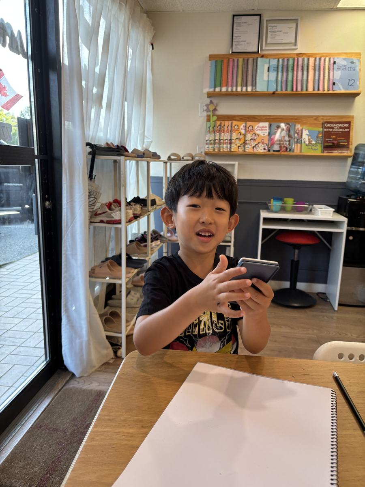
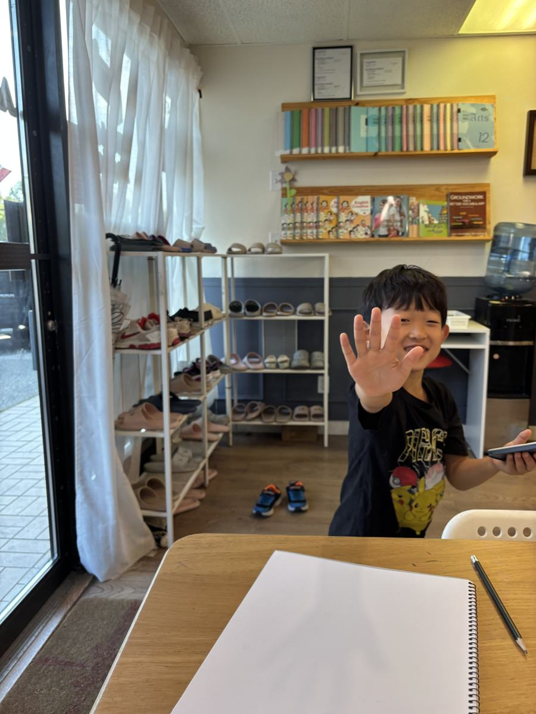
🧪 The Chemistry Poster Everything, connected
What came out is the best summary of our summer science we could have asked for — and the children wrote all of it themselves. Look closely and you can see every experiment we have done, sitting next to the idea it taught:
The purple cabbage from the pH experiment. The freeze–melt–evaporate chain from the states of water lesson. Baking soda and vinegar producing CO₂ — complete with a little drawing of yesterday's lava lamp beside it. Three separate weeks of science, and they put them on one page as one connected thing.
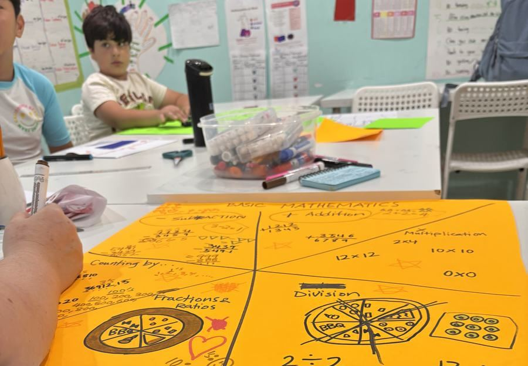
➗ The Mathematics Poster Worked out, not just listed
The maths poster took the same approach — and notably, they did not just write the category names. They worked examples out on the poster: four-digit column addition, borrowing in subtraction, 12×12, 9×9, 100×100, skip counting in 2s, 3s, 4s, 10s and 100s, and fractions drawn as pizzas cut into slices.

🏆 Mathematicians vs Scientists And everybody wins
Then the posters went up against each other on the board. New teams for a new round — and this time the Mathematicians beat the Scientists.
Yesterday it was the Calculators who beat the Humans, so the standings are getting complicated. Either way — everyone got a prize, because everyone did the work.
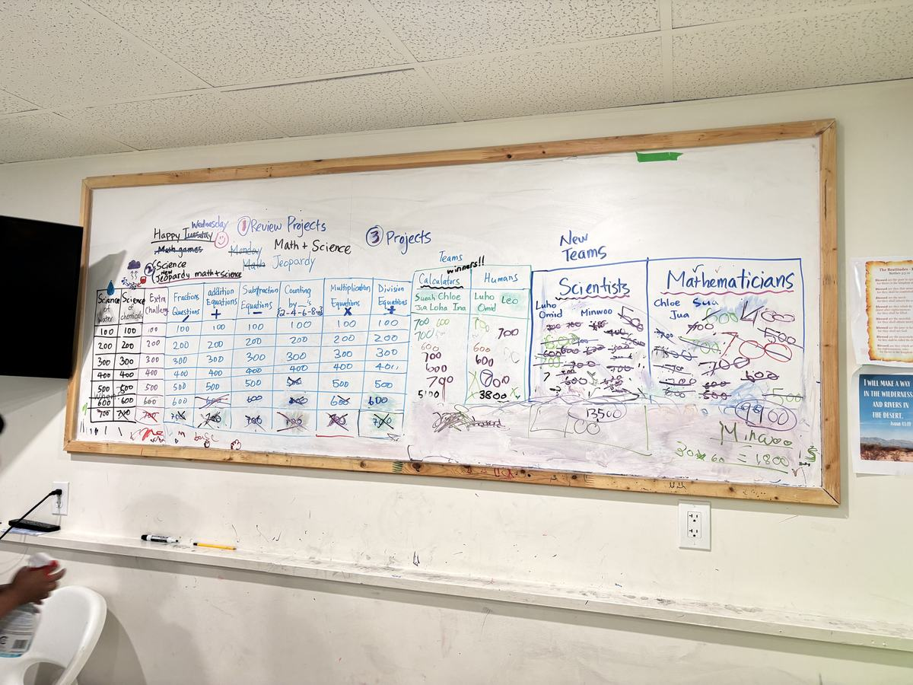
“All faced the challenge of brainstorming, checking each other's brainstorming, testing everyone's ability to demonstrate as a team, with consensus, what they have learned so far this summer in terms of basic mathematics and chemistry.” ❤️
🫐 Snack, and Some Music Blueberries · piano · guitars
Blueberries again — two full bowls of them — and then the piano, which rarely stays unoccupied for long around here.
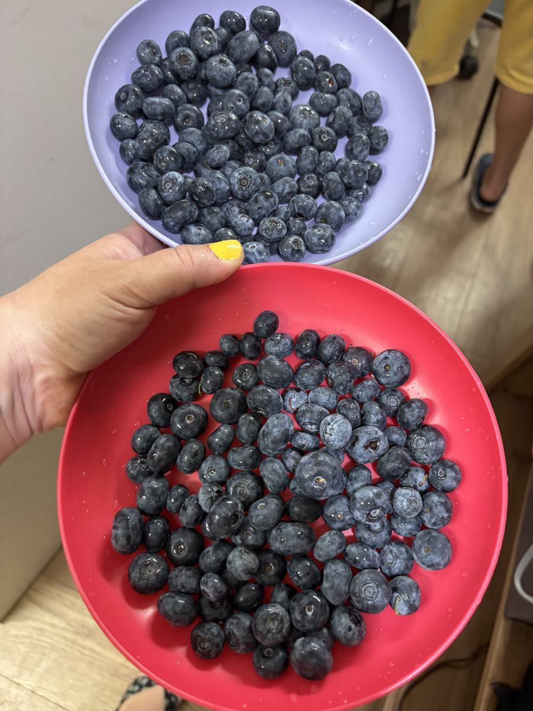
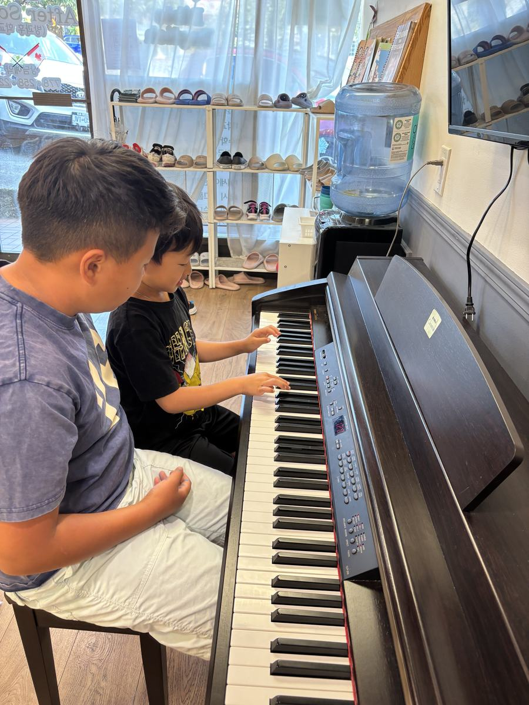
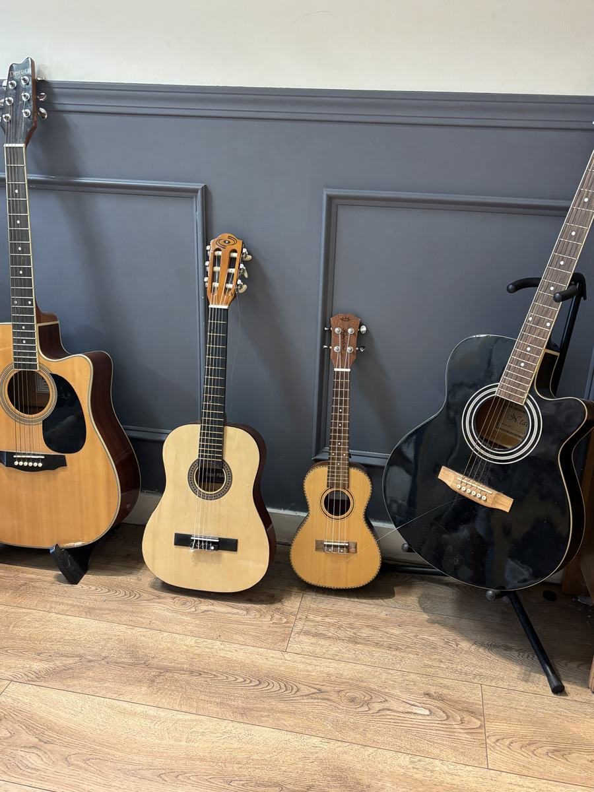
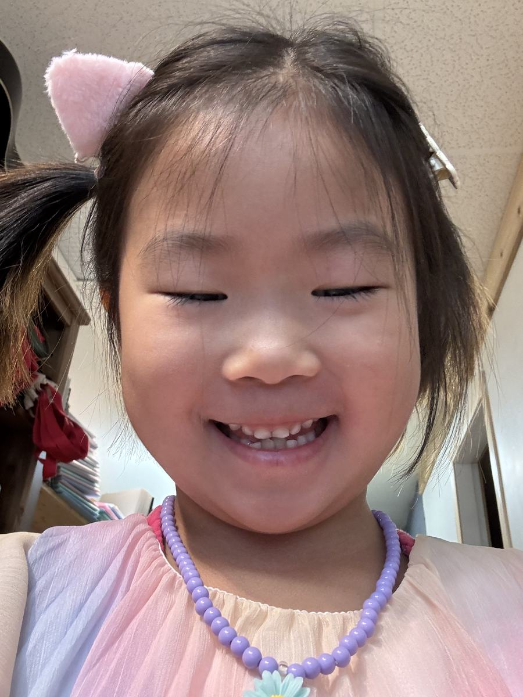
🍚 Lunch & Outside Fried rice, then sunshine
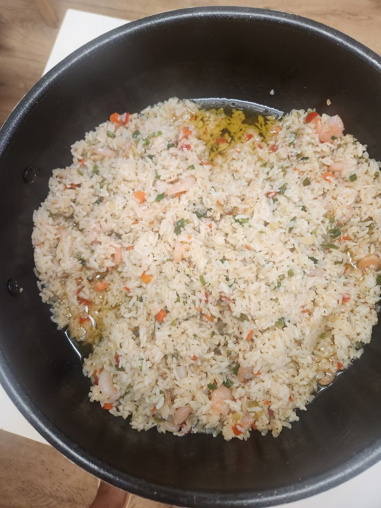
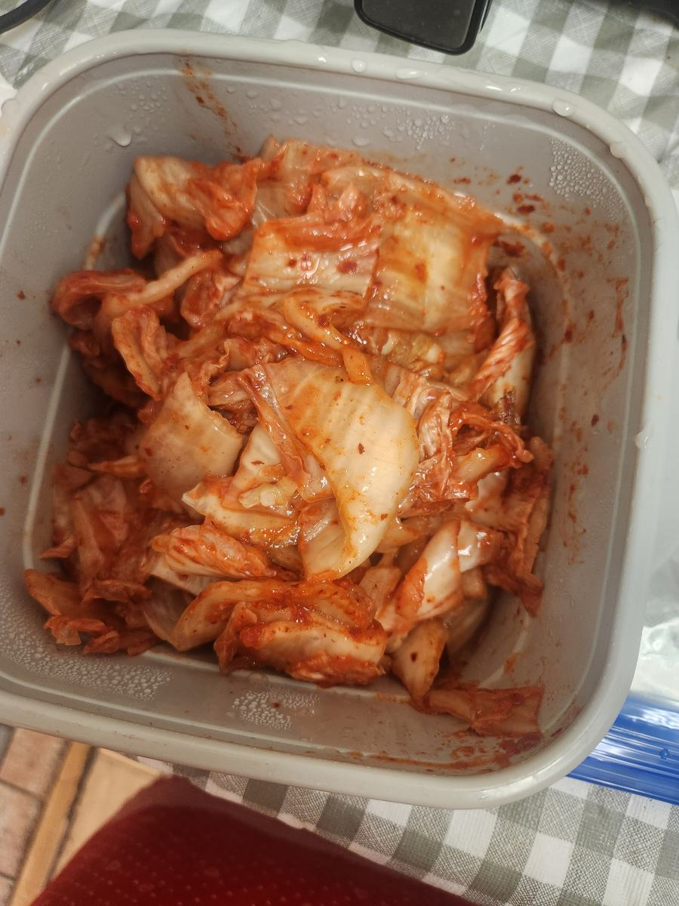
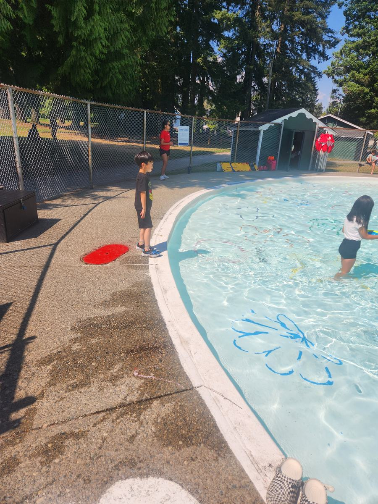
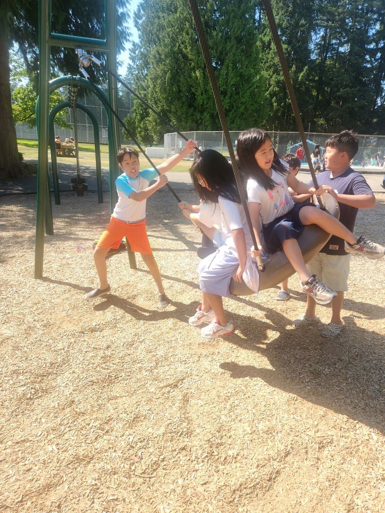
Tomorrow: new subject areas. Math and chemistry are wrapped up and reviewed — time to start something different.
If you want to know what your child actually retained this summer, ask them what turns purple cabbage water red, or what baking soda and vinegar make. They wrote it down from memory today. 🧪